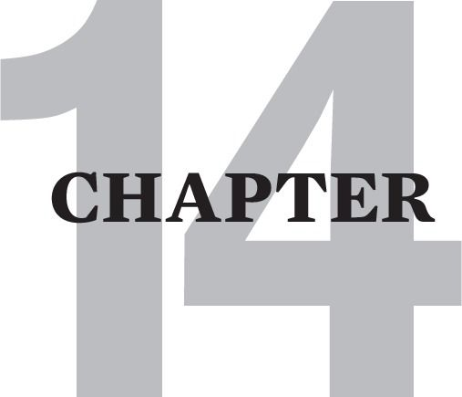

FORGIVENESS: BEGIN WITH THE SELF
This chapter is a reworking of an article of mine that was published in Recovering, November 1991. I wrote it because I was appalled at how much pressure my clients were getting to just forgive and forget. Consequently, many of them were diving right back into denial, and minimizing all the trauma that they had endured. Their recovery processes then, screeched to a halt as their inner critics denigrated them for being so unforgiving.
Because this article was helpful to my clients and because I received so much positive feedback from the recovery community, I was motivated to write my first book, The Tao of Fully Feeling, Harvesting Forgiveness Out of Blame. This book explores the complex subject of forgiving past abusers in considerable depth. In this vein, it asserts that some parents were so destructive to us, that they are not forgivable.
There is a lot of shaming, dangerous and inaccurate “guidance” put out about forgiveness in both the recovery community and in many spiritual teachings. Many survivors of dysfunctional families have been injured by the simplistic, black-and-white advice that they must embrace a position of being totally and permanently forgiving in order to recover.
Unfortunately, those who take the advice to forgive abuses that they have not fully grieved, abuses that are still occurring, and/or abuses so heinous they should and could never be forgiven, often find themselves getting nowhere in their recovery process.
In fact, the possibility of attaining real feelings of forgiveness is usually lost when there is a premature, cognitive decision to forgive. This is because premature forgiveness mimics the defenses of denial and repression. It keeps unprocessed feelings of anger and hurt about childhood trauma out of awareness.
Real forgiveness is quite distinct from premature forgiveness. It is almost always a byproduct of effective grieving and no amount of thought, intention or belief can bring it into being without a great deal of emotional work.
Conversely, belief systems that are not open to the possibility of forgiveness sometimes block our access to forgiving feelings, even when such feelings are present.
It might be that the healthiest cognitive position concerning forgiveness is an attitude that allows for the possibility of its occurrence on the other side of extensive grieving. This attitude works best if it includes the condition that feelings of forgiveness will not be forced or falsely invoked to cover up any unresolved feelings of hurt or anger.
In this vein, it is crucial to understand that certain types of abuse are so extreme and damaging to the victim that forgiveness is simply not an option. Examples of this include sociopathy, conscious cruelty, and many forms of scapegoating and parental incest.
When forgiveness has substance, it is felt palpably in the heart, and is usually an expansion of the emotion of compassion. Compassion is certainly not always the same thing as forgiveness, but it is usually the experience within which forgiveness is born. Often this happens via an intermediate process, where having grieved our childhood losses substantially, we occasionally find ourselves considering the extenuating circumstances that contributed to our parents raising us in neglectful or abusive ways.
Most commonly these extenuating circumstances revolve around two issues. First, our parents often parented us in ways that blindly replicated the ways that they were parented. And second, they were often supported in their dysfunctional parenting by the social norms and values of their times.
Nonetheless, it is once again vitally important that we do not jump into considering their mitigating circumstances until we have significantly worked through the traumatic consequences that their abuse and abandonment had on us.
When considering our parents extenuating circumstances, we may sometimes “get” that our parents were also quite victimized, and we may consequently find ourselves on occasion feeling sorry (sorrow) for them.
Sometimes this experience of feeling compassion for them becomes profound enough for us to comprehend how similarly awful and unfair their childhoods were. This feeling-based realization may on occasion morph into feeling some forgiveness for them.
However, unless this feeling of forgiveness for our parents is grounded in compassion for ourselves, the above process is an empty mental exercise. Even worse, it may become a great hindrance to doing the fundamental angering work of real recovery.
Premature forgiveness will prohibit us from showing the inner child that she had the right to be angry about her parents’ cold-hearted abandonment of her. It will stop us from helping her to express and release those old angry feelings.
Premature forgiveness will also inhibit the survivor from reconnecting with his instinctual self-protectiveness. He may never learn that he can now use his anger, if necessary, to stop present day unfairness.
As real forgiveness is primarily a feeling, it is - like all other feelings - ephemeral. It is never complete, never permanent, and never a done deal.
Forgiveness is governed by the dynamic nature of all human feeling experience. Our emotional experience is a frequently changing, unchoosable and unpredictable process of the psyche.
No emotional state can be induced to persist as a permanent experience. As sad as this may be, as much as we might like to deny it, as much as it continuingly frustrates us, and as much as we are pressured to control and pick our emotions, they are still by definition of the human condition, largely outside the province of our wills.
Forgiveness then, like love, remains a human feeling experience that is only temporarily ours. However, when we thoroughly vent our angry feelings about the past, feelings of forgiveness become more accessible. When we learn how to grieve ourselves out of abandonment flashbacks, we reemerge into a feeling of belonging to and loving the world.
Moreover, when we learn to effectively grieve through present day hurts, we quite naturally move back into loving feelings. As our emotional flexibility matures, lost feelings of love and forgiveness return so reliably that they can become consciously chosen values.
Thus, when I occasionally feel hurt by proven intimates, I may not be able to immediately invoke loving or forgiving feelings towards them, but I know that with sufficient communication and non-abusive venting, I will eventually return to an appreciative experience of them.
As much as I can forgive myself, that much can I forgive others. What I often forgive in others is an old pain of mine, released from the disgust of self-hate. It is an old vulnerability of mine that I now love and welcome like a bird with a broken wing. Shame and self-hate did not start with me, but with all my heart, I deign that they will stop with me. I will do unto myself as I would have others do unto me.
Carol Ruth Knox wrote a poem about loving feelings and the hide-and-seek game they seem to play with us.
It comes and goes, doesn’t it?
Sometimes related
to people and how they
treat us, and sometimes not
to the moon
to personal finances
to the questions of life
to nothingness
to everything
to the seasons, the time
to the food we ate
to. . . .
It would appear as if the art of loving is not whether you love or not (we all do in our present way) but whether you trust that when love leaves, it has a reason and it will return again. Always.
We humans are instruments for love by design.
(So is the whole universe!)
When love blows across us,
naturally we sing a love song.
And when there is no love wind to blow,
though it leaves us strange
and willow-like,
love has gone to an empty field where it fills its
wind sails again
so that it might return
and blow across our all too hungering instruments
one more time.
What shall we do while we wait?
We shall weep of course -
something as lovely as love
leaves a gaping hole when gone.
We shall remember love in our hearts and wait
tenderly and compassionately
with ourselves
as we wander in question
and doubt
until we remember,
“Love always returns.”